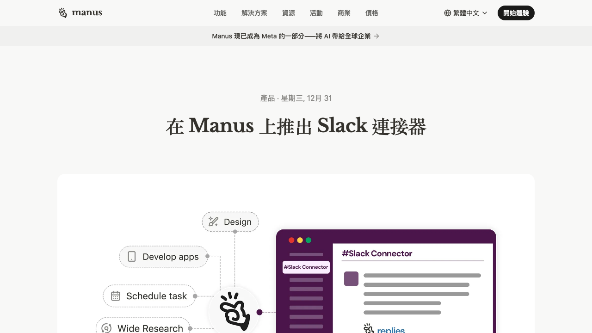
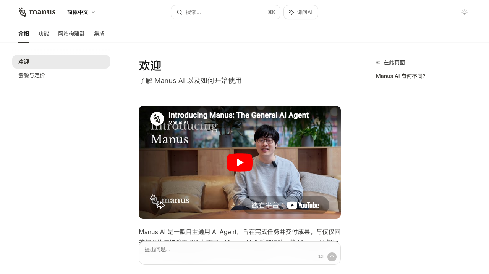
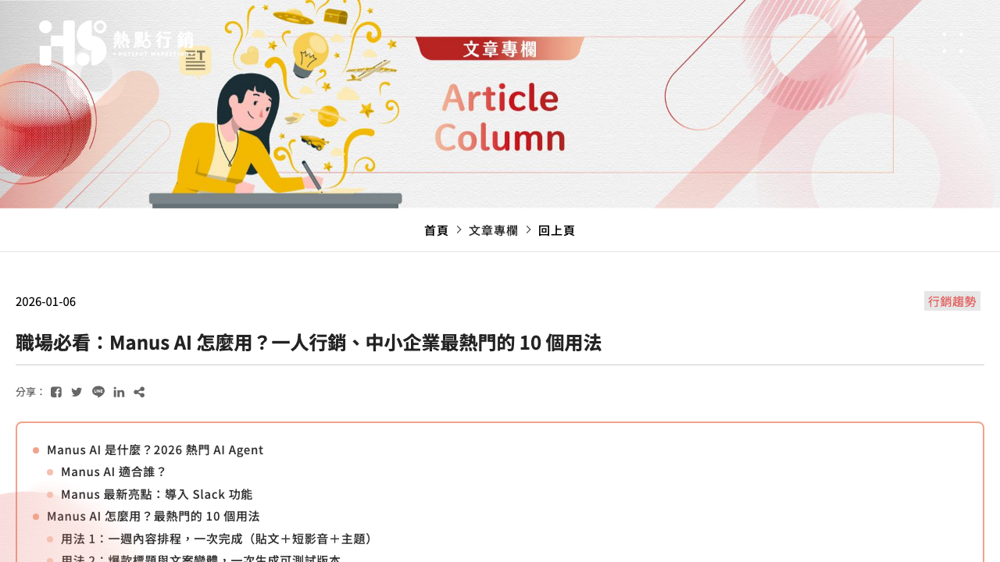
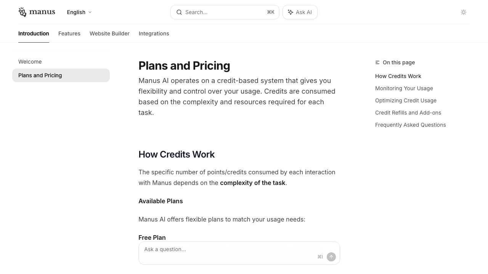

MANUS AI EXECUTIVE GUIDE
Manus 最新介紹與
使用教學
這份是給 張董與內部員工 的快速版本：幫大家用最短時間看懂 Manus 是什麼、能幫公司做什麼、怎麼開始用，以及導入時要注意哪些風險與邊界。
主題：Manus 通用 AI Agent版本：2026-05 整理形式：HTML 圖文簡報
給主管看趨勢給員工看用法給團隊看落地流程
這份是給 張董與內部員工 的快速版本：幫大家用最短時間看懂 Manus 是什麼、能幫公司做什麼、怎麼開始用，以及導入時要注意哪些風險與邊界。
它最有價值的地方不是寫文案，而是把研究、整理、簡報、彙整、追蹤這種流程型工作縮短。
它不是取代你，而是先接掉「找資料、整理、轉格式、做初稿」這些耗時動作。
如果用得對，Manus 更像內部流程加速器；如果用得亂，就會變成成本高又不穩的玩具。
這份簡報不是只摘錄單一文章，而是把 你指定的 ADBest 介紹、Manus 官方文件、官方 blog / pricing / Slack 整合資訊，以及外部教學文一起整合。
外部教學文幫我們抓市場上常見說法與使用情境；官方文件則用來校正「產品能力、方案、整合方向」這些比較需要準確的資訊。
這份內容優先站在「公司真的要用時，大家該怎麼理解與上手」的角度，不做單純工具吹捧。
你問一步，它答一步。你還是得自己整理資訊、做決定、轉格式、交成果。
你給一個目標，它會自己上網、整理、跑工具、彙整結果，最後給你接近可直接用的成品。
它比較像「執行型助手」，而不是只會陪你討論的 AI 顧問。
官方文件的說法很直接：Manus 是一個在沙盒虛擬電腦中運作、可存取網路與檔案系統、能獨立完成長任務的通用 AI Agent。
先把你一句模糊需求拆成可執行任務，例如先找資料、再比較、再輸出簡報。
去操作網站、處理檔案、執行程式、分析資料，把每個步驟真的做出來。
檢查內容是否偏題、格式是否正確、結果是否可交付，必要時退回重做。
因為大家在使用 Manus 時，不要把它當成「一次問完就一定全對」的黑盒子；更正確的用法是：把它當成會做事的助理，但你仍要設定目標、標準與驗收點。
具備完整沙盒環境、可背景執行長任務、可處理多步驟工作，且有 API 可程式化建立與管理 agent 任務。
官方 zh-tw blog 已明講 Slack 連接器上線，且 Manus 持續面向企業與團隊協作場景發展。
外部教學文普遍把它定位為：市場研究、簡報整理、任務彙整、專案追蹤、內容流程自動化工具。

要一份競品整理、網站分析、簡報骨架、會議摘要，速度會明顯變快。
那些原本需要反覆複製貼上、找資料、排格式的工作，能先丟給 Manus 做第一輪。
不要只說「幫我研究 Manus」，而要說清楚要什麼輸出：簡報、表格、摘要、待辦清單。
交代對象、語氣、格式、期限、來源要求，例如要繁中、給主管看、不可用不明來源。
先拿到骨架與初稿，不要一開始就追求完美，先看方向有沒有對。
確認事實、數字、品牌語氣、敏感資訊與是否真的能交付。
當某種提示詞 / 任務格式有效，就把它保存成公司內部標準，這樣第二次、第三次才會越來越快。

這是 Manus 最吃重的一點。你越明確，它越不容易亂跑，點數也比較不會白白燒掉。
請幫我完成 X；對象是 Y；輸出格式是 Z；資料來源優先 A；語氣用 B；最後請提供摘要 + 完整附件清單。
「請整理 5 家競品的網站定位與主力產品，做成給張董看的 8 頁繁中簡報大綱，附比較表與後續建議，來源以官網與公開頁面為主。」
內容排程、競品研究、廣告文案變體、客服 FAQ、合作提案、B2B 名單、設計需求書整理。
先用在「資料收集＋整理＋初稿」型工作，成功率最高，也最容易證明價值。
不要一開始就把最敏感的財務、法務、未公開戰略資料大量丟進去，也不要直接無審核自動外發。


官方文件目前明確是 credit-based，也就是依任務複雜度耗點。核心分 Free、Pro、Team，Team 有共享點數池與管理能力。
如果公司只是偶爾試用，可以先用低門檻方案驗證；若要多人協作、做流程化，才有 Team / API / Slack 整合的必要。
不是看它單月費多少，而是看它能不能真的替團隊省下研究、整理、初稿、彙整的工時。
它可以大幅加速，但不是所有資料都天然正確，重要結論仍需人工驗證。
財務、客戶名單、尚未公開的戰略文件，不應該先無條件整包上傳。
任務太模糊，點數會燒得更快；任務結構清楚，效率才會高。
比較穩的做法，是先讓它做研究、整理、初稿，而不是直接替公司做最終決策或對外承諾。
例如競品研究、會議摘要，不要一開始什麼都做。
把輸出格式、來源要求、語氣、對象標準化。
看省多少時間、初稿品質如何、修稿成本高不高。
若真有價值，再往 Slack / Team / API / 固定流程延伸。
先把 Manus 當成「部門內最會整理資料的初稿助理」，先跑出確定有感的場景，再談更深的企業級導入。
它是值得關注的 AI Agent 類型，但導入應以「流程效率」而不是「話題熱度」為主。
先把它當成幫你做研究、整理、初稿、彙整的工作夥伴，而不是全自動替身。
真正的關鍵，是把有效用法沉澱成標準流程，變成可複製的內部能力。
內部提醒：本簡報之對外路徑、下載位置與內部整理入口不直接展示於頁面中；如需存取，請由內部指定管理窗口統一控管。
資料來源：ADBest Manus 介紹、Manus 官方 welcome / plans 文件、Manus 官方 zh-tw blog（Slack connector、Meta 相關公告）、Leadion 與 Hotspot 教學整理。